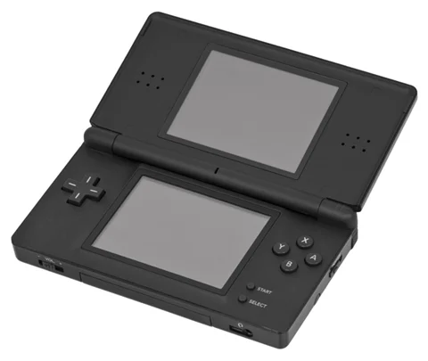
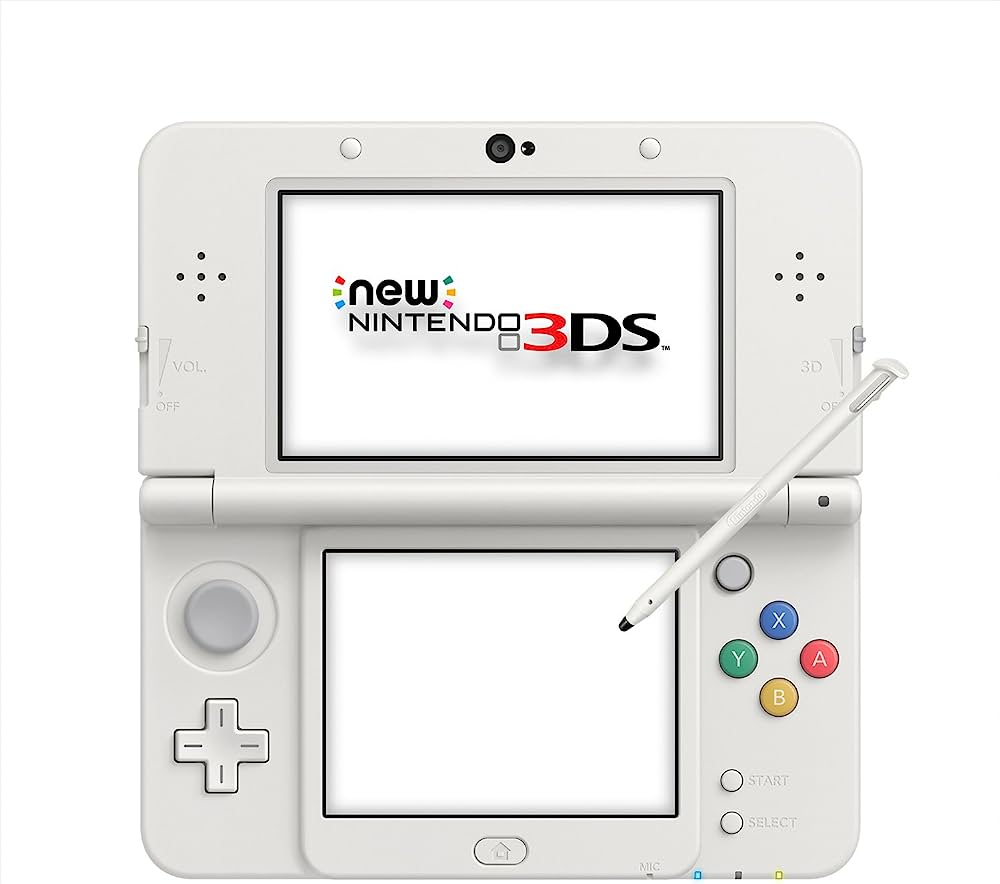

Nintendo Ds
Es una videoconsola portátil de la multinacional de origen japonés, Nintendo, creada para suceder a la Game Boy Advance. Permitía la reproducción de videojuegos y multimedia, pertenece a la séptima generación cuyo rival directo fue la PlayStation Portable.

Wii
Wii es la consola de videojuegos de séptima generación creada por Nintendo y la sucesora de la consola anterior de Nintendo, GameCube.

Nintendo 3Ds
Es una videoconsola portátil descontinuada de la multinacional de origen japonés, Nintendo, para videojuegos y multimedia, cuya atracción principal es poder mostrar gráficos en 3D sin necesidad de gafas especiales.